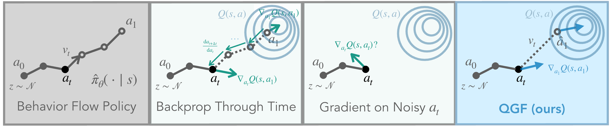

训练时只用两个稳定的监督目标（BC 流匹配 + IQL critic）；推理时用价值函数的梯度去引导每一步去噪，把动作推向更高 Q 值 —— 全程不做 actor-critic 训练。
Test-Time Gradient Guidance of Flow Policies in Reinforcement Learning
UC Berkeley · Physical Intelligence · arXiv:2606.11087 (2026)

把「策略提升」整个搬到测试时（test-time）：训练阶段只做两件互不耦合、都非常稳定的监督学习 —— 用 flow matching 行为克隆出一个参考策略，用 IQL 学一个 in-sample 的 Q/V。到了推理，才用 ∇aQ 像 classifier guidance 一样，在去噪的每一步把动作往高价值方向推。
这样就绕开了把表达力强的流/扩散策略塞进 RL 时那些老大难：既不用设计特殊的 RL 训练目标，也不用对去噪过程反向传播 —— 而这些正是 actor-critic 训练不稳定、难扩展的根源。
Diffusion / flow 模型能表示复杂、多模态的动作分布，在纯监督的行为克隆里扩展性极好。但一旦要用它做策略提升，麻烦就来了：RL 通常在「学一个会变的 Q」和「优化 actor 去最大化这个 Q」之间反复横跳，这种耦合的训练动态对超参极其敏感、容易发散，模型越大越难训。
要用 critic 的梯度 ∇aQ(s,a) 来引导动作生成，而动作又是迭代去噪产生的，此前主要有三条路，各有各的痛：
| 路线 | 做法 | 痛点 |
|---|---|---|
| 特殊训练目标 | 为流/扩散策略设计专门的 actor-critic 目标（FQL、QAM、DAC、EDP…） | 需要精调「奖励最大化 vs 行为约束」的权衡超参；训练耦合、不稳定 |
| BPTT 梯度 | 把带噪动作 at 沿 ODE 完整去噪成 a1，对整条链反传 ∇atQ(s, ODE(at)) | 昂贵；对噪声极敏感、方差高；实践中不稳定（论文 Fig 3 / Fig 14） |
| 噪声动作梯度（OOD） | 直接在带噪动作上取 ∇atQ(s, at)（QFQL） | critic 只在干净动作上训过，at 属于 OOD，梯度有偏，把动作引导到次优解（Fig 2） |
QGF 的回答是：换一个梯度估计器 —— 既不查 OOD 的 Q，也不做 BPTT，还比两者方差都低。
流策略用一个含时速度场 vθ(x,t) 把噪声 p0=𝒩(0,I) 沿 ODE 输运到数据分布。以状态 s 为条件、以数据集动作为目标，训练损失是速度回归：
推理时从 a0∼p0 积分到 a1，就得到策略样本 π̂(a|s)。全文把策略样本叫「denoised action」，中间产物叫「noisy action」。
关键选择：用 IQL 学 Q —— 它只用数据集里出现过的 (s,a)，靠一个状态价值 Vψ 做期望回归（expectile），完全不需要从策略里采样动作。这让价值学习和策略抽取彻底解耦：
对参考策略 π̂ 的 KL 正则化奖励最大化（β>0 控制约束强度）有经典闭式解：
把它转成对数梯度（score）。由于流对应一个 score 函数，可写成参考策略的 score 加一项价值梯度；再按前人做法推广到去噪中间的带噪动作 at：
直觉：在去噪速度上加一项价值梯度，就把参考策略往高 Q 方向推 —— 权重 1/β 越大越激进。这正是「用学到的 Q 当分类器」的 classifier guidance。唯一的问题只剩一个：式 (5) 里那项 ∇atQ(s,at) 怎么算才靠谱？
式 (5) 写下来很干净，可一旦要把那项 ∇atQ(s,at) 算成一个能用的梯度，就会同时撞上两堵墙。QGF 的每一步近似都不是随手偷懒，而是为拆掉其中一个死结而生。先把矛盾摆清楚：
两条约束把可行域夹成一条窄缝：既要在 critic 可信的干净动作域上取梯度（否则违反约束一），又不能真去跑完、反传整条去噪链（否则撞上约束二）。 下面三步近似，正是穿过这条缝的走法。
不跑完剩下的 T−1 步，只用当前速度场做一次大跳，直接估出去噪终点 â1（式 7 / 代码 第 200 行）。一次前向，就把「带噪的 at」翻译成 critic 认识的「近似干净动作」—— 这座桥同时绕过了约束一（Q 评在干净点上）与约束二（不必跑完整条链）。
â1 仍通过速度网络依赖 at，严格链式法则要算 ∂â1/∂at，其中那项网络 Jacobian ∂vθ/∂at 又把约束二换个马甲请了回来。论文发现它贡献的方差远大于方向修正，于是干脆近似成单位阵：
在代码里，这个「丢弃」不是一个 if 分支，而是 第 199、209 行两处 stop_gradient 的自然结果：切断 â1 对 at 的全部依赖后，jax.grad 求出的就纯是 ∇â1Q。
还有第三堵墙藏在训练里：离线场景下，只要让 Q 去评估策略生成的动作，就会 OOD 高估、自举发散。QGF 干脆不在训练里做策略提升 —— actor 是纯 BC 流匹配、critic 是纯 IQL，两者都不采样策略动作（代码 第 132–143 行），把 Q 的作用整个推迟到推理时的引导（第 225 行）。于是不稳定的 actor-critic 优化，降维成两个稳定的回归。
把「怎么算式 (5) 那项梯度」的所有选择摆在一起，就能看清 QGF 落在哪个甜点上：
| 估计器 | 在哪取 Q 梯度 | Jacobian | 代价 / 方差 | 偏差 |
|---|---|---|---|---|
| OOD（式 5，QFQL） | 噪声动作 at | — | 低 | 大（OOD，收敛到次优） |
| BPTT（式 6） | 真终点 a1 | 反传整条链 | 高（∝ 链长） | 无（无偏） |
| QGF-Jacobian（式 8） | 近似干净 â1 | 单步映射的 J | 中（仍要对 vθ 求导） | 小 |
| QGF（式 9） | 近似干净 â1 | 丢弃，Ĵ=I | 最低 | 小（可控） |
所以「丢掉 Jacobian」本质是一次偏差-方差取舍：接受一点点偏差（忽略 at 如何反过来重塑去噪方向），换掉一大块方差与算力。论文分析（Fig 3 / Fig 4）表明 QGF 的梯度方差最低、对输入噪声最不敏感，因而是最好的「Q 值优化器」。
与其在噪声动作上硬取梯度，QGF 先便宜地估出干净动作：沿当前速度场走一步大 Euler直接跳到去噪终点（这是对整条 ODE 的一阶近似）：
于是真梯度可用「链式法则」近似为 Q 的梯度乘上去噪映射的 Jacobian J=∂â1/∂at：
但论文发现这个 Jacobian 会「不老实」（需要对 vθ 求导，早期步骤里近似很粗），把它直接换成单位阵 Ĵ=I 反而更好 —— 这就是 QGF 用的估计器：
全部核心逻辑都在 agents/qgf.py（JAX / Flax）。下面按「训练（解耦的监督损失）→ 推理（引导去噪）」的顺序，把论文的式子逐行对到代码。行号与仓库一致。
训练里没有任何「actor 追 critic」的环节。三条损失各自独立求梯度：flow-matching BC、IQL 的 Q、IQL 的 V。
采样噪声 a0 与时间 t，做线性插值 at，让网络回归目标速度 a1−a0。纯监督，梯度里没有 Q。
68a0 = jax.random.normal(eps_rng, a1.shape)69t = jax.random.randint(70 time_rng, (a1.shape[0],), 0, denoise_steps+174) / self.config["denoise_steps"]76a_t = a0 * (1 - tv) + a1 * tv # x_t=(1−t)x0+t·x177vel = a1 - a0 # 目标速度79pred_vel = self.policy(obs, a_t, t, ...)80bc_loss = jnp.mean((vel - pred_vel)**2)
Q 用 n-step TD 目标 r + γH·mask·V(s′)（价值来自 V，不是 Q）。V 只用数据集里的动作做 expectile 回归 —— 从不采样策略，价值学习与策略彻底解耦。
89next_v = self.value(next_obs)90target_q = rewards + (discount**H)*masks*next_v91qs = self.critic(obs, batch_actions, ...)92critic_loss = ((qs - target_q)**2 * valid_w).mean()..99qs = self.target_critic(obs, batch_actions) # 数据集动作100q = self._aggregate_q(qs) # min over 2 Q102value_loss = expectile_loss(q - v, 0.9)*valid_w
policy、critic、value 各自 apply_loss_fn 独立更新，target critic 用 τ=0.005 做软更新。actor 的梯度里根本没有 Q —— 这就是「test-time RL」得以稳定、可扩展的根。
132new_policy, _ = self.policy.apply_loss_fn(policy_loss)135new_critic, _ = self.critic.apply_loss_fn(critic_loss)138new_target_critic = target_update(139 self.critic, self.target_critic, tau) # Polyak141new_value, _ = self.value.apply_loss_fn(value_loss)
sample_actions 是全篇的心脏）下面这段 jax.lax.scan 的循环体 step，就是 Algorithm 1 逐行的实现。
181a = jax.random.normal(seed, (B, full_action_dim)) # a0 ~ 𝒩(0,I)182dt = 1.0 / self.config["denoise_steps"] # δ = 1/T187def step(a, t_idx): # scan 的循环体191 v_bc = self.policy(observations, a, ti) # 参考速度 v_θ(s,a_t,t)198 elif denoised_action_approx == "one_euler_step_approx":199 v_bc_sg = jax.lax.stop_gradient(v_bc) # ① 截断①200 a_approx = jnp.clip(a + (1-tv)*v_bc_sg, -1, 1) # â₁ 一步 Euler (式7)206 def q_fn(a):207 return self._aggregate_q(self.target_critic(obs, a)).sum()209 qgrad = jax.grad(q_fn)(jax.lax.stop_gradient(a_approx)) # ② g=∇Q, Ĵ=I (式9)225 return a + (v_bc + guidance_weight*qgrad)*dt, None # a_{t+δ} 引导更新227actions, _ = jax.lax.scan(step, a, jnp.arange(denoise_steps)) # 跑满 T 步
stop_gradient 的自然结果：第 199 行把 vbc 截断，第 209 行又对 a_approx 截断后才求 jax.grad。于是 â1 对 at 的依赖被彻底切断，qgrad 就是纯粹在 â1 处的 ∇â1Q —— 精确对应式 (9)。这条分支不截断速度：用 jacrev 求出去噪映射的 Jacobian J=∂â1/∂at，再 Ĵ⊤∇Q。这就是论文里的 QGF-Jacobian 变体 —— 对噪声更敏感、更差（Fig 3/4/8），所以默认关。
214if apply_jacobian:217 def map_single(a_i, obs_i, tv_i):218 v = self.policy(obs_i[None], a_i[None], tv_i)[0] # 不截断219 return jnp.clip(a_i + (1-tv_i[0])*v, -1, 1)221 jac = vmap(jacrev(map_single))(a, obs, tv) # J=∂â₁/∂a_t223 qgrad = jnp.einsum("bi,bij->bj", qgrad, jac) # Ĵ⊤∇Q (式8)
同一状态复制 N 份、各自引导去噪，最后按 Q 取最优。N=1 就是纯 QGF；调大 N 就是用更多测试算力换性能。
235if rejection_sampling > 1:236 q = self._aggregate_q(self.target_critic(obs, actions))241 actions = actions[arange(B), jnp.argmax(q, axis=1)] # best-of-N
速度场是一个 MLP：拼接 [obs, at, 时间嵌入] 过 MLP 再输出速度；Q/V 是带 ensemble 的 MLP（utils/networks.py）。所有 QGF 行为都由这几个开关决定（agents/qgf.py:328–366）：
时间用正弦嵌入（networks.py:110），拼接后过带 LayerNorm 的 GELU-MLP，末层 Dense 输出维度 = 动作维（chunking 时 = H×动作维）。
160parts = [obs, noised_action]162 parts.append(embed_time(t, self.time_embedding))164concat_input = jnp.concatenate(parts, axis=-1)165outputs = MLP(hidden_dims, activate_final=True, ...)(concat_input)168v = nn.Dense(self.action_dim)(outputs) # 速度
denoised_action_approx 与 apply_jacobian 两个开关，就能在 QGF / QGF-Jacobian / QFQL（noisy） 之间切换 —— 同一份代码复现论文里的多条曲线。
350q_aggregation = "min" # clipped double-Q352expectile = 0.9 # IQL expectile τ354denoise_steps = 10 # 去噪步数 T359denoised_action_approx = "one_euler_step_approx"363apply_jacobian = False # QGF 默认丢 Jacobian
所有实验都从 main.py 启动，用 --agent=agents/<agent>.py 选算法、--agent.<key>=<value> 覆盖超参。环境来自 OGBench 的操作任务（cube / puzzle / scene）。
README 里的例子（cube-triple 单任务，100M 数据集，动作分块 H=5）：
1MUJOCO_GL=egl python main.py \2 --agent=agents/qgf.py \3 --agent.denoised_action_approx=one_euler_step_approx \4 --agent.apply_jacobian=False \5 --agent.action_chunking=True --agent.horizon_length=5 \6 --env_name=cube-triple-play-singletask-task1-v0 \7 --ogbench_dataset_dir=$OGBENCH_DATA_DIR/cube-triple-play-100m-v0/ \8 --guidance_weights=0.004,0.008,0.01,0.02,0.04,0.06,0.08,0.1,0.12
--guidance_weights：它一次性列出所有要试的引导权重 1/β。评估时，eval_with_test_time_guidance（utils/evaluation.py:381）对每个权重各跑一遍 rollout，把不同权重的成功率分别记录，并取最优的那一档作为该方法的成绩。因为引导只发生在推理，扫权重不需要重新训练 —— 这正是 test-time RL「一次训练、按需调优」的便利。若想在同一个 BC+IQL 底座上对比多种 test-time 方法（QFQL、BPTT、RobustQ、GradStep），先跑 scripts/bc_iql_train.py 训练底座，再跑对应的 scripts/exp_*_test_time_eval.py；train-time 方法（FQL、EDP、QAM…）则各自独立训练。细节见 README。
在 OGBench 的长时序操作任务上（单任务 20 个 / goal-conditioned 25 个，多 seed）：
QGF 打败所有基于梯度的 test-time 方法（QFQL / BPTT / RobustQ），并与最强的 train-time 方法 EDP 持平甚至略优。
每个动作的算力：QGF ≈ 0.0013 GFLOPs，best-of-N（N=16）≈ 0.146 —— 便宜约两个数量级。
叠加 best-of-N 后，QGF+BFN(N=4) 用更少的测试算力追平 BFN(N=16)。
goal-conditioned 设定下，任务越难、时序越长，QGF 相对优势越大（仅在最简单的 p45 略逊 QFQL）。
模型 0.8M→3.2M 参数，QGF 性能近 4 倍提升；对照的 QAM 放大模型却不涨。可扩展性来自解耦的稳定训练。
把 IQL 的 Q 换成更强的 QAM Q，QGF 进一步变强 —— 它是一个通用、即插即用的 policy extraction。